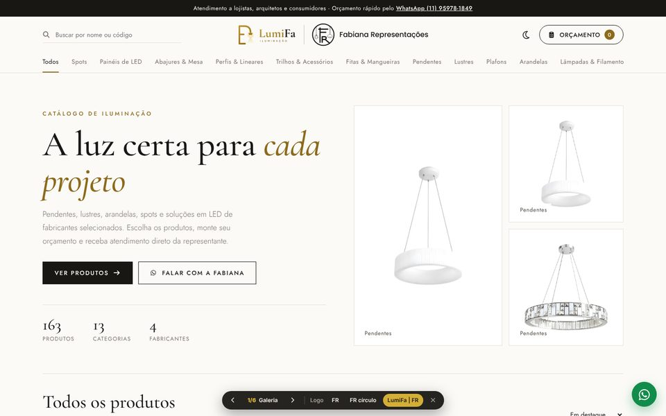
Galeria
Visual de marca de design: muito espaço em branco, títulos elegantes, fotos grandes e preço discreto. Passa sofisticação para quem vende iluminação decorativa.
- Capa com 3 peças em destaque e números do catálogo
- Categorias em menu de texto, como lojas de grife
- Card limpo com "Detalhes" e "Orçar" ao passar o mouse
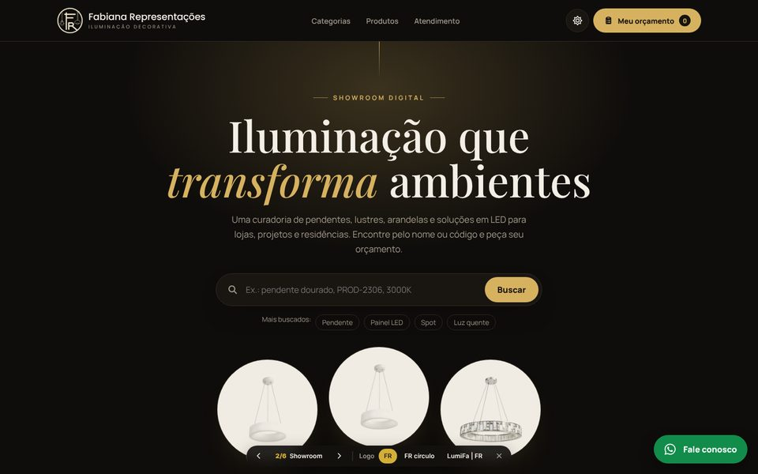
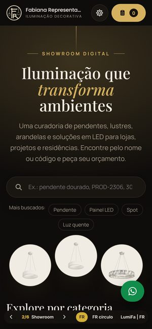
Showroom
Fundo escuro com brilho dourado, como um showroom à noite: os produtos aparecem "acesos" em vitrines claras. Abre no escuro e tem botão para o modo claro.
- Busca grande na capa com sugestões ("Pendente", "Painel LED"...)
- Categorias em blocos com foto de um produto real
- Barra de categorias fixa ao rolar a vitrine
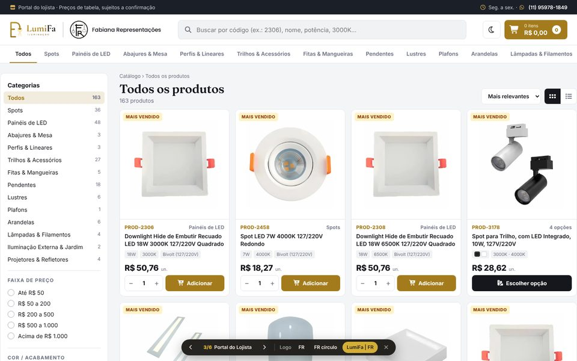
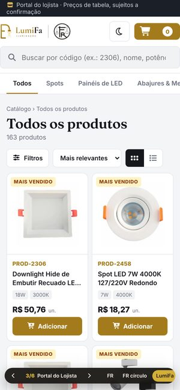
Portal do Lojista
Feito para quem compra em quantidade. Filtros na lateral (categoria, faixa de preço, cor, temperatura), filtros aplicados em etiquetas e quantidade direto no card.
- Total do orçamento sempre visível no topo
- Troca entre grade e lista
- Especificações principais (W, K, tensão) no próprio card
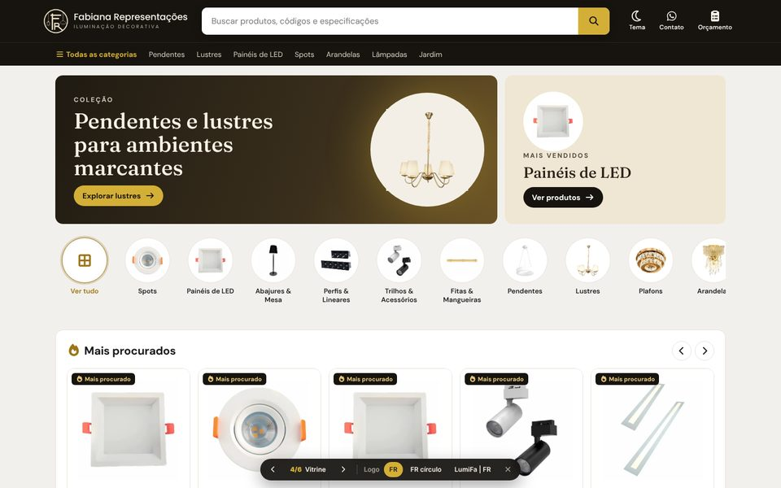
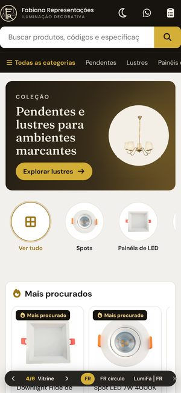
Vitrine
Formato de grande loja online, que o cliente já sabe usar: barra de busca no centro, categorias em círculos e prateleiras que deslizam.
- Banners de coleção (pendentes e lustres, mais vendidos)
- Prateleiras: Mais procurados, Novidades, Pendentes e lustres
- Grade completa com ordenação em botões
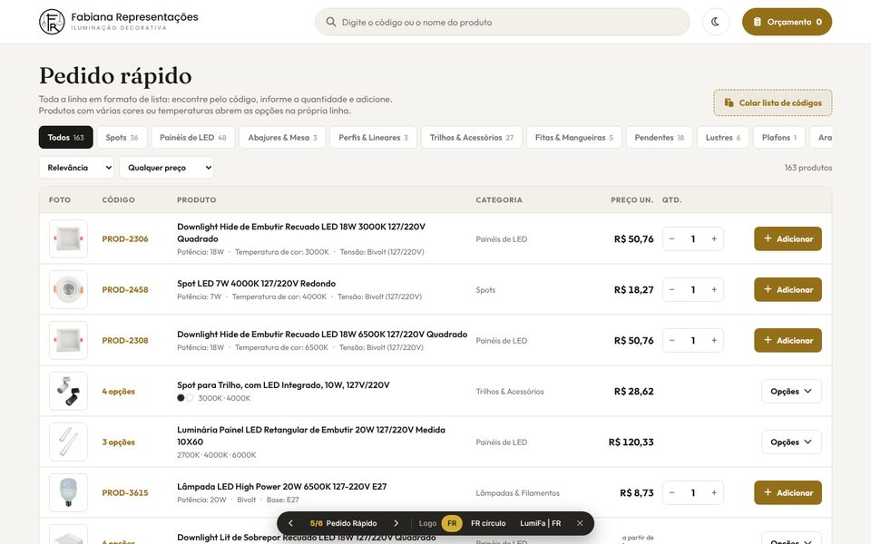
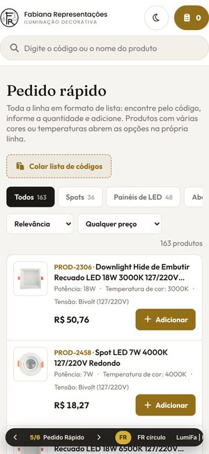
Pedido Rápido
O catálogo como uma tabela de pedido: código, produto, preço e quantidade na mesma linha. Produtos com várias cores abrem as opções na própria linha.
- "Colar lista de códigos": cola 2306 10, 2458 4... e entra tudo no orçamento
- Barra fixa embaixo com total e botão de enviar
- Ótimo para cliente que já sabe o que quer repor
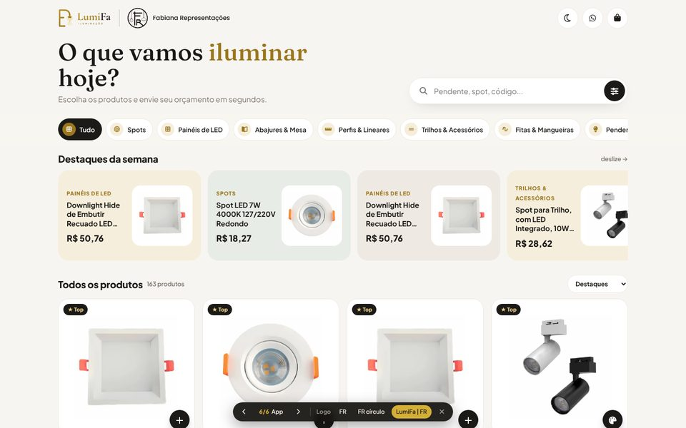
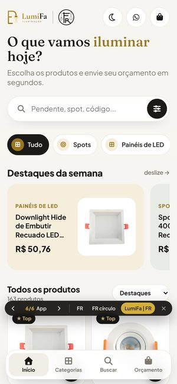
App
Pensado primeiro para o celular, onde a maioria dos clientes abre o link do WhatsApp: botões grandes, menu fixo embaixo e barra do orçamento sempre à mão.
- Menu inferior: Início, Categorias, Buscar, Orçamento
- Botão "+" na foto para orçar com um toque
- Destaques em cartões coloridos que deslizam
| Modelo | Melhor para | Filtros | Orçar direto do card | Visual |
|---|---|---|---|---|
| 1 · Galeria | Mostrar peças decorativas com sofisticação | Categorias | Sim | Claro, editorial |
| 2 · Showroom | Causar impacto e passar luxo | Categorias com foto | Sim | Escuro e dourado |
| 3 · Portal do Lojista | Lojistas que compram muitos itens | Categoria, preço, cor, temperatura | Sim, com quantidade | Claro, profissional |
| 4 · Vitrine | Cliente final acostumado a e-commerce | Categorias e ordenação | Sim | Loja online |
| 5 · Pedido Rápido | Reposição pelo código, pedidos grandes | Categoria e preço | Sim, com quantidade e lista colada | Tabela |
| 6 · App | Quem abre pelo celular | Categorias | Sim (botão +) | Moderno, arredondado |